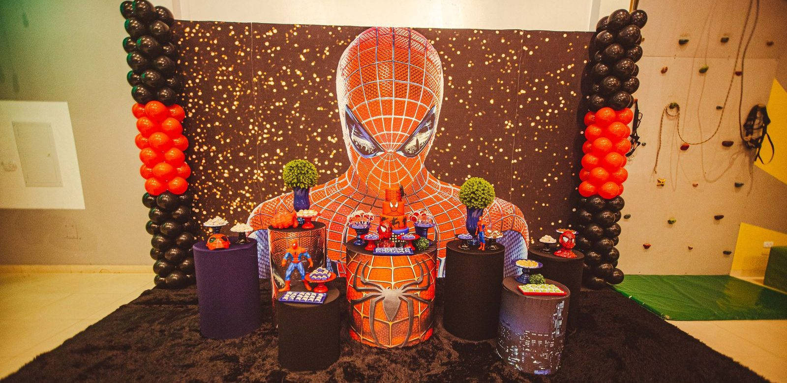

Een Spider-Man verjaardagsfeest organiseren
Een superheldenfeest geven? Met deze tips wordt het verjaardagsfeestje van je kleine webslinger onvergetelijk.

In het kort
Een Spider-Man feestje organiseer je in vijf stappen: uitnodigen, versieren in rood en blauw, maskers knutselen bij binnenkomst, drie of vier webspelletjes, en een traktatie met een bedankje mee naar huis. Voor een feestje van twee uur is dat precies genoeg. Hieronder staat alles, met een draaiboek per kwartier.
| Kleuren | Rood en blauw, met wit voor de webben |
| Hoe lang | Twee uur voor kinderen van 5 tot 8 jaar, anderhalf uur voor kleuters |
| Hoeveel kinderen | Een bekende vuistregel: evenveel kinderen als je kind jaren wordt |
| Begin met | Een masker knutselen, dan heeft iedereen meteen iets te doen |
| Spelletjes | Drie of vier, elk tien tot vijftien minuten |
| Mee naar huis | Het zelfgemaakte masker en een klein uitdeelzakje |
Het draaiboek voor twee uur
| Tijd | Wat je doet |
|---|---|
| 0:00 | Binnenkomst: iedereen knutselt een Spider-Man masker |
| 0:25 | Spel 1: web schieten |
| 0:40 | Spel 2: het spinnenweb-parcours |
| 0:55 | Taart of traktatie, en drinken |
| 1:15 | Spel 3: red de stad, een speurtocht |
| 1:40 | Cadeautjes openen, of een rustig spel zoals de superheldenquiz |
| 1:55 | Uitdeelzakjes pakken, ophalen |
Zo bereid je het voor
- Twee tot drie weken vooraf: stuur de uitnodigingen. Leuk idee: maak er een “geheime missie” van, met de vraag of de gast komt helpen de stad te redden.
- Een week vooraf: verzamel de spullen. Wit wol, rood en blauw papier, karton, elastiek, ballonnen en een paar knuffels voor de speurtocht.
- Een paar dagen vooraf: maak de aanwijzingen voor de speurtocht en verstop ze nog niet.
- De dag ervoor: versier de kamer en span het parcours.
- Op de dag zelf: zet de knutseltafel klaar met uitgeknipte maskers, zodat de jongste gasten alleen hoeven te kleuren.
Versiering
- Ballonnen in rood en blauw, in trosjes bij de deur.
- Spinnenwebben van wit wol in de hoeken van de kamer, kriskras tussen twee punten.
- Een groot web op de deur, met plakband vastgezet.
- Een stadsgezicht: plak donkere kartonnen flatgebouwen op de muur, met gele ramen.
- Spinnen van een eierdoos op tafel, zie de knutselgids.
De leukste spelletjes
- Web schieten. Gooi met een bol wol naar een doel, bijvoorbeeld een emmer. Wie het vaakst raak gooit, wint.
- Spinnenweb-parcours. Span touw kriskras door een gang en kruip eronderdoor zonder het aan te raken. Hang er belletjes aan, dan hoor je het meteen.
- Red de stad. Een speurtocht: de kinderen volgen aanwijzingen naar een “gevangen” knuffel en bevrijden die.
- Plak de spin. Net als ezeltje prik, maar dan met een papieren spin op een groot web en een blinddoek.
- Bevriezen als een spin. Dansen op muziek; stopt de muziek, dan blijft iedereen stil hangen alsof hij tegen een muur kleeft.
- Superheldenquiz. Een rustig spel voor tussendoor, met onze grote superheldenquiz.
Eten en traktatie
- Webtaart: spuit witte glazuur in rondjes op een rode of blauwe taart en trek met een satéprikker lijnen van het midden naar buiten. Dan ontstaat vanzelf een web.
- Fruitspiesjes in superheldenkleuren, met aardbeien en blauwe bessen.
- Rode limonade of water met een rietje.
- Een rood-blauwe traktatie voor de klas, als je kind ook op school trakteert.
Wat je meegeeft
- Het zelfgemaakte masker: dat is het mooiste aandenken.
- Een eierdoosspin of een web-shooter van een wc-rolletje.
- Stickers of een kleurplaat.
- Een klein snoepje of een mandarijn in een rood zakje.
Per leeftijd
| Leeftijd | Wat werkt |
|---|---|
| 3 en 4 jaar | Anderhalf uur, twee korte spelletjes, maskers al uitgeknipt, ouders blijven erbij |
| 5 en 6 jaar | Twee uur, het parcours en web schieten zijn favoriet |
| 7 en 8 jaar | Twee uur, een speurtocht met raadsels, en de quiz |
| 9 jaar en ouder | Een spannende speurtocht door het huis, of samen een film kijken; kijk dan eerst bij Kijkwijzer welke leeftijd erbij hoort |
👪 Tip voor ouders
Houd het aantal spelletjes en de tijd passend bij de leeftijd: een paar korte, simpele spelletjes zijn vaak leuker dan veel ingewikkelde. Niet elk kind houdt van spinnen, dus houd het bij webben en helden. En wil je een Spider-Man-film laten zien, kijk dan voor het actuele leeftijdsadvies op Kijkwijzer.
💡 Wist je dat?
Spider-Man bestaat sinds 1962, uit het stripboek Amazing Fantasy nummer 15 van Stan Lee en Steve Ditko. Hij was bijzonder omdat hij zelf nog een tiener was: Peter Parker ging gewoon naar school, net als de gasten op het feestje. Meer lees je in de geschiedenis van Spider-Man.
Nog een cadeau nodig voor de jarige? Kijk bij welk Spider-Man cadeau bij welke leeftijd past, of bij maskers en verkleedpakken.
Veelgestelde vragen
Hoe lang duurt een Spider-Man kinderfeestje?
Twee uur is genoeg voor kinderen van vijf tot acht jaar. Voor kleuters is anderhalf uur meestal beter, met twee korte spelletjes.
Welke spelletjes doe je op een Spider-Man feestje?
Web schieten met een bol wol, een spinnenweb-parcours van touw, een speurtocht om een knuffel te bevrijden, plak de spin met een blinddoek, en bevriezen als een spin op muziek.
Hoe versier je voor een Spider-Man feestje?
Met rode en blauwe ballonnen, webben van wit wol in de hoeken en op de deur, een stad van donker karton op de muur en zelfgemaakte spinnen van een eierdoos op tafel.
Wat geef je mee na een Spider-Man feestje?
Het zelfgemaakte masker is het mooiste aandenken. Vul dat aan met stickers, een kleurplaat, een eierdoosspin of een klein snoepje in een rood zakje.
Wat maak je als taart voor een Spider-Man feestje?
Een webtaart: spuit witte glazuur in rondjes op een rode of blauwe taart en trek met een satéprikker lijnen van het midden naar buiten. Dan ontstaat vanzelf een spinnenweb.
Bijgewerkt en gecontroleerd op 25 oktober 2026. De feiten over Spider-Man komen uit onze gids over de geschiedenis van Spider-Man.